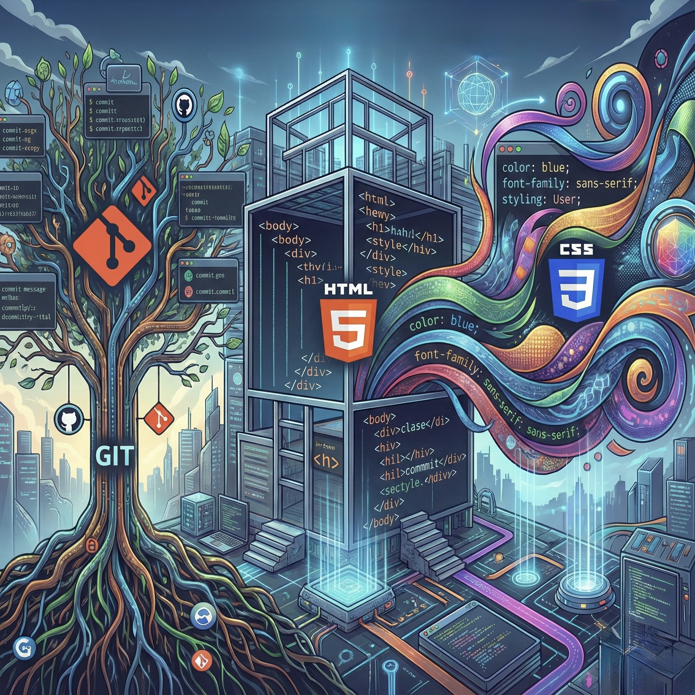

Is a first-year subject in the Double Degree in Mathematical Engineering and Computer Engineering at Universidad Francisco de Vitoria.
This course provides knowledge foundations to understand how computer systems function from multiple perspectives:
social, technical, and ethical. Unlike purely technical courses, this subject balances theory with immediately
applicable practical skills, preparing students to a real work situation by making a final project "Practical Work II" using tools
like Git, HTML and CSS.
This Subject is divided in two parts:

This subject has provided me of knowledge of how computer systems interact with digital creativity. The concepts of HTML5 and CSS3 are relevant for designing user interfaces in content generation tools. The block on professional ethics and deontological codes is especially valuable for my interest in generative AI, as it allows me to critically address questions such as: Who is responsible for AI-generated content? How can we design systems that respect intellectual property while fostering innovation? These are crucial questions for the future of AI-powered video games. Repository management with Git and GitHub is a practical skill I apply daily in my personal programming projects and will apply it on all my career. This subject has not only given me technical knowledge but also a broader perspective on the role of computer engineering in today's society.